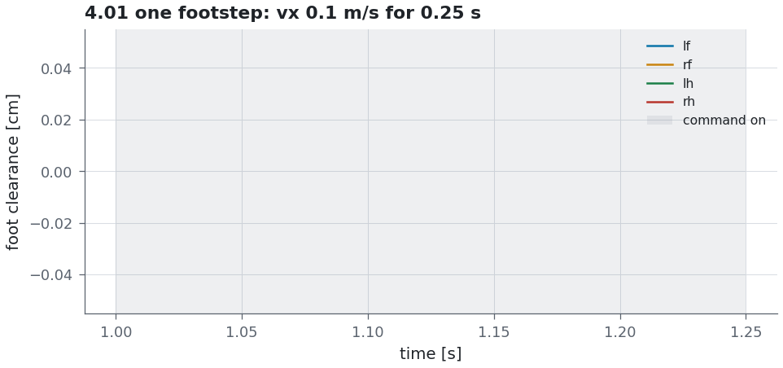
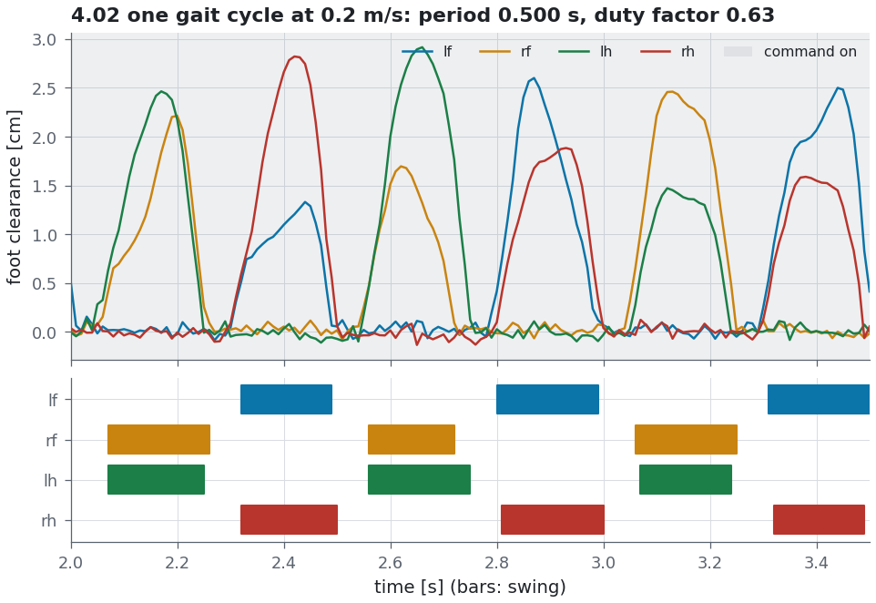
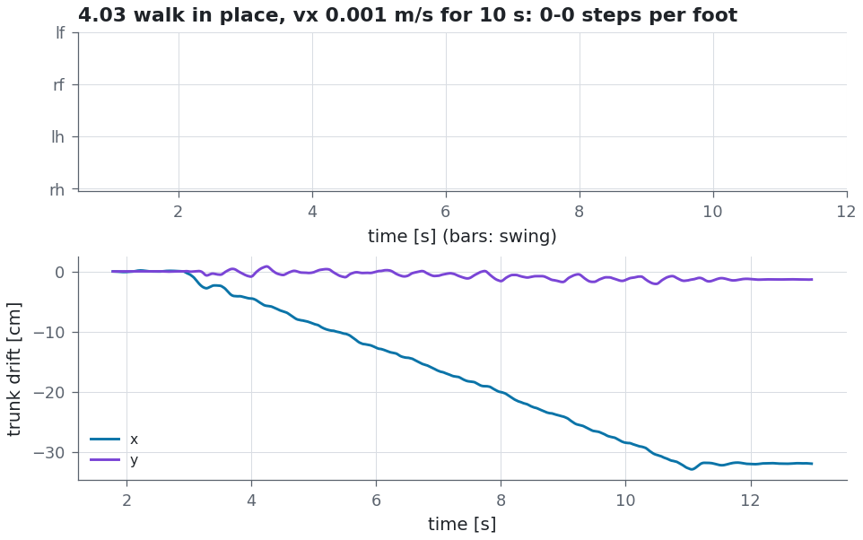
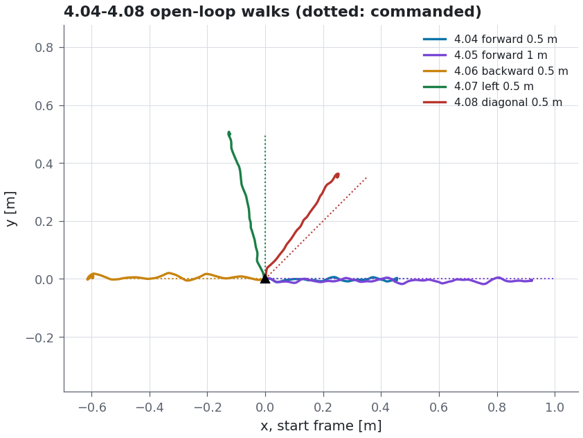
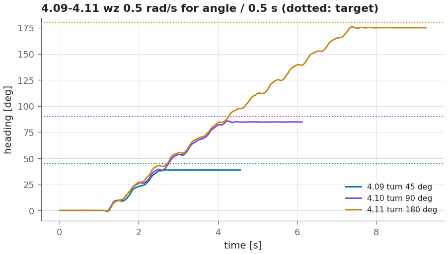
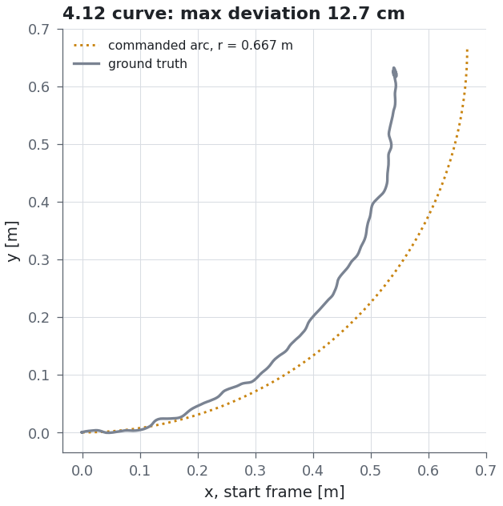
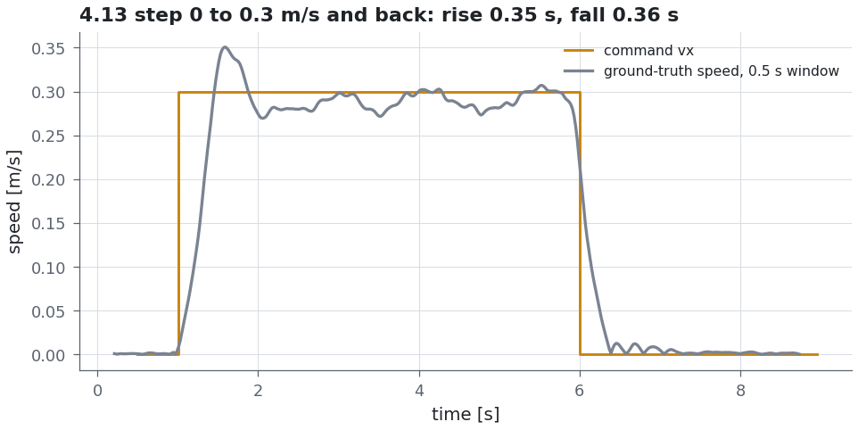
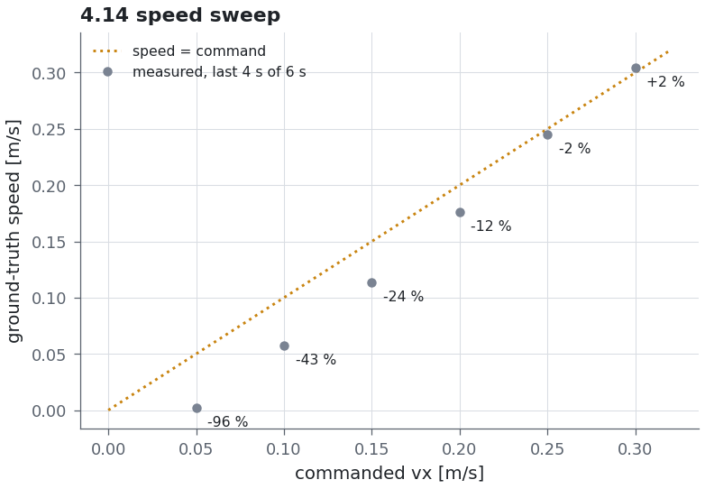
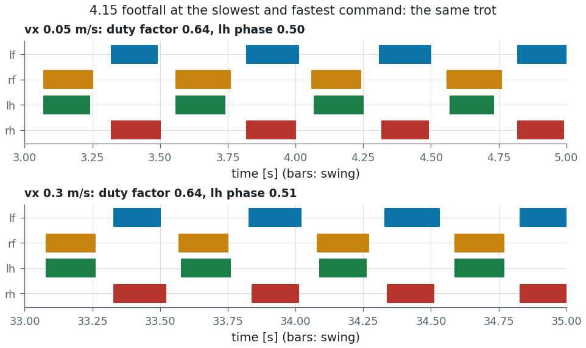

Tasks · Stage 4
Basic locomotion
The write-up of this stage is not published yet. These are the acceptance results recorded so far, read from tasks/s04_basic-locomotion/results.
4.01 One footstep failed
| Check | Measured | Rule | Result |
|---|---|---|---|
stepping_pair_is_rf_lh | False | stepping_pair_is_rf_lh == true | fail |
liftoffs_per_stepping_foot | 0 | liftoffs_per_stepping_foot == 1 | fail |
stepping_peak_clearance_m | 0 | stepping_peak_clearance_m >= 0.01 | fail |
other_pair_max_clearance_m | nan | other_pair_max_clearance_m <= 0.005 | fail |
body_displacement_m | 0.001779 | body_displacement_m <= 0.05 | pass |

Run with python3 run.py 4.01 in tasks/s04_basic-locomotion.
4.02 One gait cycle failed
| Check | Measured | Rule | Result |
|---|---|---|---|
stride_period_s | 0.5 | 0.47 <= stride_period_s <= 0.53 | pass |
duty_factor | 0.63 | 0.42 <= duty_factor <= 0.58 | fail |
phase_rf | 0.504 | 0.45 <= phase_rf <= 0.55 | pass |
phase_lh | 0.508 | 0.45 <= phase_lh <= 0.55 | pass |
phase_rh_wrapped | 0.01 | |phase_rh_wrapped| <= 0.05 | pass |

Run with python3 run.py 4.02 in tasks/s04_basic-locomotion.
4.03 Walk in place failed
| Check | Measured | Rule | Result |
|---|---|---|---|
drift_m | 0.32 | drift_m <= 0.1 | fail |
yaw_change_deg | 2.387 | |yaw_change_deg| <= 5.0 | pass |
min_liftoffs_per_foot | 0 | min_liftoffs_per_foot >= 15 | fail |

Run with python3 run.py 4.03 in tasks/s04_basic-locomotion.
4.04 Walk 0.5 m verified
| Check | Measured | Rule | Result |
|---|---|---|---|
distance_ratio | 0.9016 | 0.7 <= distance_ratio <= 1.3 | pass |
cross_track_over_distance | 0.02194 | cross_track_over_distance <= 0.1 | pass |
heading_change_deg | 0.1428 | |heading_change_deg| <= 5.0 | pass |

Run with python3 run.py 4.04 in tasks/s04_basic-locomotion.
4.05 Walk 1 m verified
| Check | Measured | Rule | Result |
|---|---|---|---|
distance_ratio | 0.9182 | 0.7 <= distance_ratio <= 1.3 | pass |
cross_track_over_distance | 0.01788 | cross_track_over_distance <= 0.1 | pass |
heading_change_deg | 0.2698 | |heading_change_deg| <= 5.0 | pass |
Run with python3 run.py 4.05 in tasks/s04_basic-locomotion.
4.06 Walk backward verified
| Check | Measured | Rule | Result |
|---|---|---|---|
distance_ratio | 1.191 | 0.7 <= distance_ratio <= 1.3 | pass |
cross_track_over_distance | 0.04067 | cross_track_over_distance <= 0.1 | pass |
heading_change_deg | -0.5983 | |heading_change_deg| <= 5.0 | pass |
Run with python3 run.py 4.06 in tasks/s04_basic-locomotion.
4.07 Walk sideways failed
| Check | Measured | Rule | Result |
|---|---|---|---|
distance_ratio | 1.001 | 0.7 <= distance_ratio <= 1.3 | pass |
cross_track_over_distance | 0.2539 | cross_track_over_distance <= 0.1 | fail |
heading_change_deg | 2.953 | |heading_change_deg| <= 5.0 | pass |
Run with python3 run.py 4.07 in tasks/s04_basic-locomotion.
4.08 Walk diagonally failed
| Check | Measured | Rule | Result |
|---|---|---|---|
distance_ratio | 0.856 | 0.7 <= distance_ratio <= 1.3 | pass |
cross_track_over_distance | 0.1626 | cross_track_over_distance <= 0.1 | fail |
heading_change_deg | 1.419 | |heading_change_deg| <= 5.0 | pass |
Run with python3 run.py 4.08 in tasks/s04_basic-locomotion.
4.09 Turn 45 deg failed
| Check | Measured | Rule | Result |
|---|---|---|---|
heading_error_deg | -6.198 | |heading_error_deg| <= 5.0 | fail |
position_drift_m | 0.06015 | position_drift_m <= 0.15 | pass |

Run with python3 run.py 4.09 in tasks/s04_basic-locomotion.
4.10 Turn 90 deg verified
| Check | Measured | Rule | Result |
|---|---|---|---|
heading_error_deg | -5.253 | |heading_error_deg| <= 9.0 | pass |
position_drift_m | 0.1215 | position_drift_m <= 0.15 | pass |
Run with python3 run.py 4.10 in tasks/s04_basic-locomotion.
4.11 Turn 180 deg failed
| Check | Measured | Rule | Result |
|---|---|---|---|
heading_error_deg | -4.945 | |heading_error_deg| <= 18.0 | pass |
position_drift_m | 0.164 | position_drift_m <= 0.15 | fail |
Run with python3 run.py 4.11 in tasks/s04_basic-locomotion.
4.12 Walk a curve failed
| Check | Measured | Rule | Result |
|---|---|---|---|
max_radial_deviation_m | 0.1268 | max_radial_deviation_m <= 0.1 | fail |
end_heading_error_deg | 3.61 | |end_heading_error_deg| <= 10.0 | pass |

Run with python3 run.py 4.12 in tasks/s04_basic-locomotion.
4.13 Accelerate and decelerate verified
| Check | Measured | Rule | Result |
|---|---|---|---|
rise_time_s | 0.3482 | rise_time_s <= 1.5 | pass |
fall_time_s | 0.356 | fall_time_s <= 1.0 | pass |
steady_ratio | 0.9725 | 0.9 <= steady_ratio <= 1.1 | pass |

Run with python3 run.py 4.13 in tasks/s04_basic-locomotion.
4.14 Different speeds failed
| Check | Measured | Rule | Result |
|---|---|---|---|
max_tracking_error_pct | 96.01 | max_tracking_error_pct <= 20.0 | fail |

Run with python3 run.py 4.14 in tasks/s04_basic-locomotion.
4.15 Walk-trot transition failed
| Check | Measured | Rule | Result |
|---|---|---|---|
gait_changes_with_speed | False | gait_changes_with_speed == true | fail |

Run with python3 run.py 4.15 in tasks/s04_basic-locomotion.